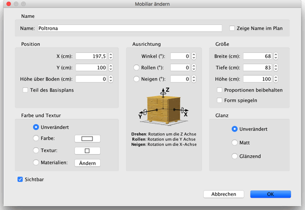
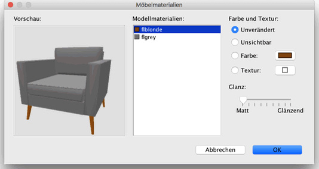

| Möbel ändern | |||
Sie können die Lokation, die Größe und die Winkel von Möbeln ändern.
Entweder mit der Maus oder über das Mobiliar > ändern... Menü. Wenn ein Möbelstück ausgewählt ist im Plan, dann können Sie dessen Größe, Höhe über dem Boden und Winkel mit einem der vier Indikatoren verändern, die an den Ecken des ausgewählten Objektes erscheinen.
|

|
Wenn der Mauszeiger über einer dieser Ecken ist, verändert er sein
Aussehen um Ihnen zu zeigen, dass Sie nun mit mit Drag&Drop das ihm
entsprechende Attribut des gewählten Objektes verändern können. Während
Sie die Maustaste gedrückt halten, wird ein Tooltip angezeigt, der den
Wert Ihrer Änderung anzeigt. Ein Möbelstück kann ebenfalls in einem Menü verändert werden. Dazu doppelklicken Sie auf ein Möbelstück im Plan oder in der Liste, oder in dem Sie Mobiliar > Ändern... auswählen, nachdem Sie ein Möbelstück ausgewählt haben.  In diesem Dialog können Sie den Namen des Möbelstücks, die X- und Y-Koordinate
seines Mittelpunkts, seine Höhe über dem Boden, seine Breite, Tiefe und Höhe,
die Farbe, Textur und den Glanz, die Sichtbarkeit, den Rotationswinkel,
die Anzeige des Namens im Plan sowie die Spiegelung ändern.  Der Bereich zum Bearbeiten von Mobiliarmaterialien zeigt die Liste der bearbeitbaren Materialien sowie eine 3D-Vorschau Ihrer Farb- und Texturänderungen an, da Materialnamen nicht immer intuitiv verständlich oder übersetzt sind (wie bone2 an Stelle von Matratze oder flyellow an Stelle von Rahmen in der vorherigen Abbildung). Falls nötig, können Sie das Objekt in der 3D-Vorschau auch mit der Maus drehen. |
|